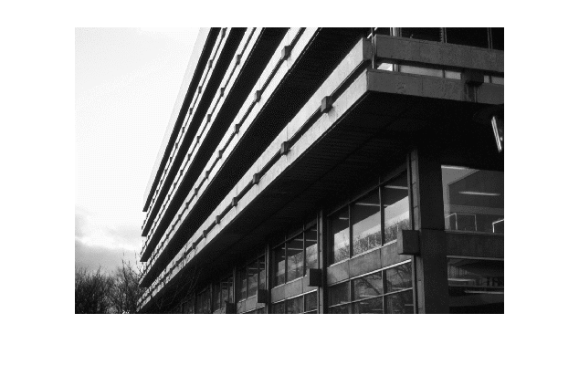
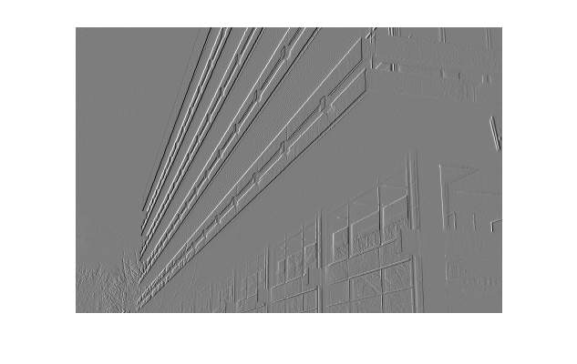

Matlab image processing introduction
David Young
This is to help you get started with image processing in Matlab.
Contents
Setup
You can execute the code in this file a section at a time to see the effects. (If you run the whole script, the results will overwrite each other.) You can execute a few lines by copying them into the Matlab Command Window. Alternatively, you can view the script in the Matlab editor, and activate Cell Mode from the Cell menu. Then you can click in a cell (a section between two headings) to highlight it and click the "Evaluate cell" icon, or press CTRL-ENTER, to execute it.
First you must set your Matlab path to find the Sussex Matlab computer vision teaching libraries. This involves executing an addpath command. Details of what to put in this command depend on which computer you are using and are given at the start of the course.
You will need to execute the addpath command at the start of each future session. You can do this by copying it to a startup.m file in the directory (folder) in which you start up Matlab, or you can just type it in, cut and paste it, or use Matlab's history mechanism each time.
Read in an image
This uses the local function teachimage to read an image from disc, and convert it correctly to a gray-level array with values in the range 0-1.
We then use the Matlab function imshow to display it in a figure window.
Image = teachimage('edin_lib.bmp');
imshow(Image);
 Find out the size of the image
Print the number of rows and the number of columns. The size function operates on any matrix, not just ones holding image data.
[rmax, cmax] = size(Image)
rmax = 314 cmax = 469
Simple image processing (conventional version)
Subtract each pixel from the one on its right, using loops and indexing as in ordinary languages.
Diffs = zeros(rmax, cmax-1); % Pre-allocate array for row = 1:rmax; % Loop over rows for col = 1:cmax-1; % Loop over columns Diffs(row, col) = Image(row, col+1) - Image(row, col); end end % display the result imshow(Diffs, []); % Note the [] gives automatic grey-level scaling
Simple image processing (Matlab version)
Now the same operation, using Matlab matrix operations, which are very much faster and simpler to write. We then print out the largest absolute difference to check that the results are the same as before.
Im1 = Image(:, 1:cmax-1); % Miss off the rightmost column Im2 = Image(:, 2:cmax); % Miss off the leftmost column Diffs2 = Im2 - Im1; % Subtract pixel values maximum_difference = max(max(abs(Diffs-Diffs2)))
maximum_difference =
0
Experimenting yourself
You can experiment with this demonstration yourself, by downloading this html document and using Matlab's grabcode function to extract the original M-file. You can then edit it to experiment with the code.
This document may be accessible from outside Sussex University, but to use functions from the local library you need to be a student or member of staff of the University.
Copyright University of Sussex, 2006